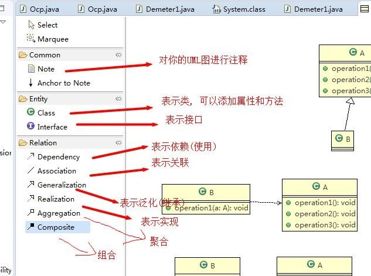
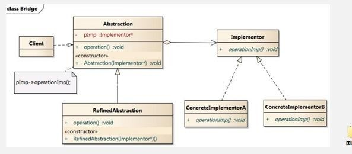
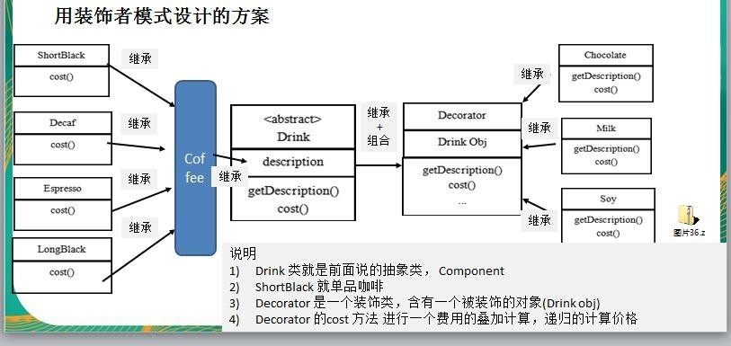
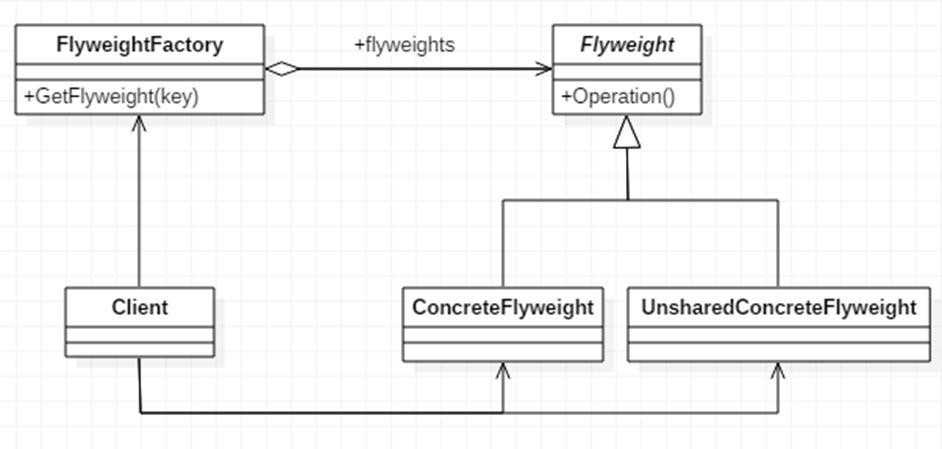
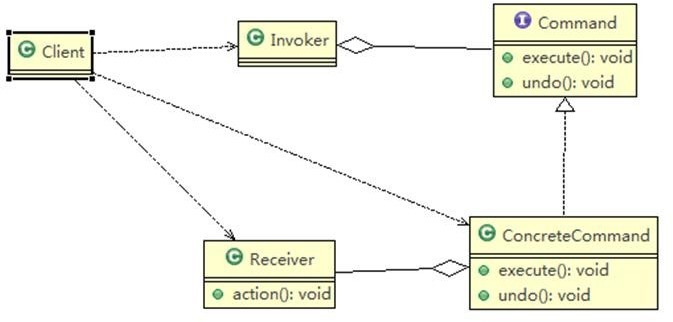
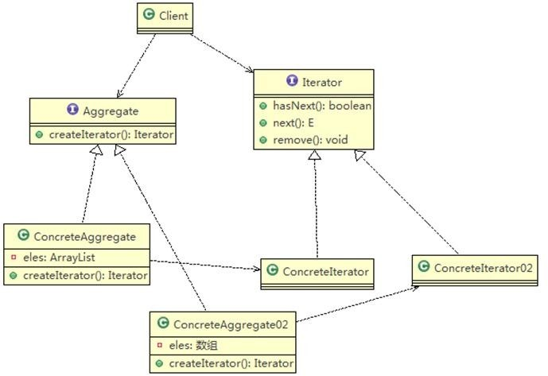
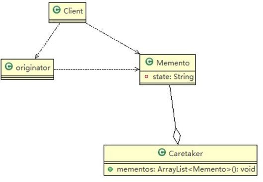
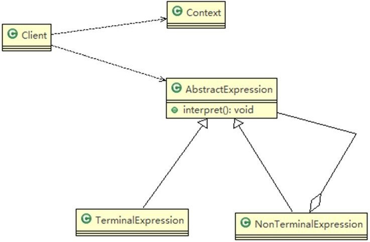
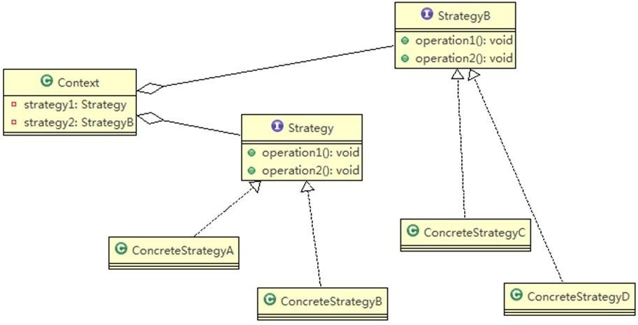
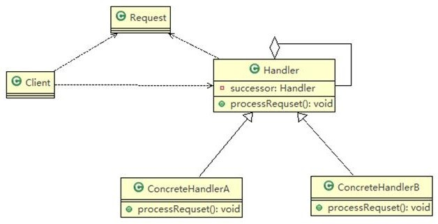

简介
软件工程中，设计模式是对软件设计中普遍存在的各种问题所提出的解决方案。
编写代码，需要解决耦合性、内聚性、可维护性、可扩展性、重用性、灵活性的问题。
低耦合：该是哪个模块的错误就在哪个模块报错
高内聚：
代码重用性：相同功能的代码，不用多次编写
可读性：编程规范性，便于其他程序员的阅读和理解
可扩展性：需要增加新的功能时成本低
可靠性：增加新的功能后，对原来的功能没有影响
七大设计原则核心思想
- 单一职责
- 接口隔离
- 依赖倒转
- 里式替换
- 开闭原则ocp
- 迪米特法则
- 合成复用原则
单一职责 single responsibility
一个类只负责一项职责，降低类的复杂度。
public class SingleResp{
psvm() {
// 1
Vehicle vehicle = new Vehicle();
vehicle.run("摩托车");
vehicle.run("汽车");
vehicle.run("飞机");
// 2
RoadVehicle roadVehicle = new RoadVehicle();
roadVehicle.run("摩托车");
roadVehicle.run("汽车");
AirVehicle airVehicle = new AirVehicle();
airVehicle.run("飞机");
// 3
Vehicle3 vehicle3 = new Vehicle3();
vehicle3.run("汽车");
vehicle3.runWater("轮船");
vehicle3.runAir("飞机");
}
}
//方案 1 的分析
// 在方式1的run方法中，违反了单一职责原则(海陆空都管)
class Vehicle {
public void run(String vehicle) {
System.out.println(vehicle + " 在公路上运行");
}
}
//方案 2 的分析
// 遵守单一职责原则，但是这样做的改动很大，即将类分解，同时修改客户端
class RoadVehicle {
public void run(String vehicle) {
System.out.println(vehicle + "公路运行");
}
}
class AirVehicle {
public void run(String vehicle) {
System.out.println(vehicle + "天空运行");
}
}
//方案 3 的分析
// 在方法级别上，仍然是遵守单一职责
class Vehicle3 {
public void run(String vehicle) {
System.out.println(vehicle + " 在公路上运行....");
}
public void runAir(String vehicle) {
System.out.println(vehicle + " 在天空上运行....");
}
public void runWater(String vehicle) {
System.out.println(vehicle + " 在水中行....");
}
}接口隔离原则 Interface Segregation Principle
客户端不应该依赖它不需要的接口，即一个类对另一个类的依赖应该建立在最小的接口上。
public class Segregation1 {
public static void main(String[] args) {
}
}
//接口
interface Interface1 {
void operation1();
void operation2();
void operation3();
void operation4();
void operation5();
}
class B implements Interface1 {
public void operation1() {
System.out.println("B 实现了 operation1");
}
public void operation2() {
System.out.println("B 实现了 operation2");
}
public void operation3() {
System.out.println("B 实现了 operation3");
}
public void operation4() {
System.out.println("B 实现了 operation4");
}
public void operation5() {
System.out.println("B 实现了 operation5");
}
}
class D implements Interface1 {
public void operation1() {
System.out.println("D 实现了 operation1");
}
public void operation2() {
System.out.println("D 实现了 operation2");
}
public void operation3() {
System.out.println("D 实现了 operation3");
}
public void operation4() {
System.out.println("D 实现了 operation4");
}
public void operation5() {
System.out.println("D 实现了 operation5");
}
}
//A 类通过接口Interface1依赖(使用) B 类，但是只会用到 1,2,3 方法
class A {
public void depend1(Interface1 i) {
i.operation1();
}
public void depend2(Interface1 i) {
i.operation2();
}
public void depend3(Interface1 i) {
i.operation3();
}
}
//C 类通过接口Interface1依赖(使用) D 类，但是只会用到 1,4,5 方法
class C {
public void depend1(Interface1 i) {
i.operation1();
}
public void depend4(Interface1 i) {
i.operation4();
}
public void depend5(Interface1 i) {
i.operation5();
}
}修改后的代码，将接口拆分。
public class Segregation1 {
public static void main(String[] args) {
// 使用一把
A a = new A();
a.depend1(new B()); // A 类通过接口去依赖 B 类
a.depend2(new B());
a.depend3(new B());
C c = new C();
c.depend1(new D()); // C 类通过接口去依赖(使用)D 类
c.depend4(new D());
c.depend5(new D());
}
}
// 接 口 1
interface Interface1 {
void operation1();
}
// 接 口 2
interface Interface2 {
void operation2();
void operation3();
}
// 接 口 3
interface Interface3 {
void operation4();
void operation5();
}
class B implements Interface1, Interface2 {
public void operation1() {
System.out.println("B 实现了 operation1");
}
public void operation2() {
System.out.println("B 实现了 operation2");
}
public void operation3() {
System.out.println("B 实现了 operation3");
}
}
class D implements Interface1, Interface3 {
public void operation1() {
System.out.println("D 实现了 operation1");
}
public void operation4() {
System.out.println("D 实现了 operation4");
}
public void operation5() {
System.out.println("D 实现了 operation5");
}
}
// A 类通过接口 Interface1,Interface2 依赖(使用) B 类，但是只会用到 1,2,3 方法
class A {
public void depend1(Interface1 i) {
i.operation1();
}
public void depend2(Interface2 i) {
i.operation2();
}
public void depend3(Interface2 i) {
i.operation3();
}
}
// C 类通过接口 Interface1,Interface3 依赖(使用) D 类，但是只会用到 1,4,5 方法
class C {
public void depend1(Interface1 i) {
i.operation1();
}
public void depend4(Interface3 i) {
i.operation4();
}
public void depend5(Interface3 i) {
i.operation5();
}
}依赖倒转原则 Dependence Inversion Principle
高层模块不应该依赖底层模块，二者都应该依赖其抽象。抽象不应该依赖细节。中心思想是面向接口编程。使用接口的目的是制定好规范。
依赖传递三种方式：通过接口传递，通过构造方法，通过setter方式传递。
public class DependencyInversion {
public static void main(String[] args) {
Person person = new Person();
person.receive(new Email());
}
}
class Email {
public String getInfo() {
return "电子邮件信息: hello,world";
}
}
//完成 Person 接收消息的功能
//方式 1 分析
//1. 简单，比较容易想到
//2. 如果我们获取的对象是 微信，短信等等，则新增类，同时 Person 也要增加相应的接收方法
class Person {
public void receive(Email email) {
System.out.println(email.getInfo());
}
}
解决思路：引入一个抽象的接口 IReceiver, 表示接收者, 这样 Person 类与接口 IReceiver 发生依赖。因为 Email, WeiXin 等等属于接收的范围，他们各自实现 IReceiver 接口就 ok, 这样我们就符合依赖倒转原则。
public class DependencyInversion {
public static void main(String[] args) {
//客户端无需改变
Person person = new Person();
person.receive(new Email());
person.receive(new WeiXin());
}
}
//定义接口
interface IReceiver {
public String getInfo();
}
class Email implements IReceiver {
public String getInfo() {
return "电子邮件信息: hello,world";
}
}
//增加微信
class WeiXin implements IReceiver {
public String getInfo() {
return "微信信息: hello,ok";
}
}
//方式 2
class Person {
//这里我们是对接口的依赖
public void receive(IReceiver receiver ) {
System.out.println(receiver.getInfo());
}
}里式替换原则
继承包含这样一层含义：父类中凡是已经实现好的方法，实际上是在设定规范和契约，虽然它不强制要求所有的子类必须遵循这些契约，但是如果子类对这些已经实现的方法任意修改，就会对整个继承体系造成破坏。
继承在给程序设计带来便利的同时，也带来了弊端。比如使用继承会给程序带来侵入性，程序的可移植性降低， 增加对象间的耦合性，如果一个类被其他的类所继承，则当这个类需要修改时，必须考虑到所有的子类，并且父类修改后，所有涉及到子类的功能都有可能产生故障
在使用继承时，遵循里氏替换原则，在子类中尽量不要重写父类的方法。原来的父类和子类都继承一个更通俗的基类。如果需要发生关系，可以采用聚合、组合。
开闭原则 Open Closed Principle
一个软件实体应该对扩展开放（对提供方），对修改关闭（对使用方）。用抽象构建框架，用实现扩展细节。当软件需要变化时，尽量通过扩展软件实体的行为来实现，而不是通过修改。
迪米特法则
也叫最少知道原则。一个对象应该对其他对象保持最少的了解。类和类关系越密切，耦合度越大。
直接的朋友：耦合的方式包括依赖、关联、组合、聚合等。出现了成员变量，方法参数，方法返回值中的类是直接的朋友。出现在局部变量中的类不是直接的朋友。
合成复用原则
尽量使用合成、聚合的方式，而不是使用继承。
UML类图
类之间的关系
依赖
在类中用到了对方。
泛化
实际上就是继承，依赖关系的特例。
实现
实现了接口。
关联
依赖关系的特例。具有导航性，即双向或单向关系。有单向一对一关系，双向一对一关系。
聚合
整体与部分可以分开，是关联关系的特例。
public class Computer {
private Mouse mouse;
Private Monitor monitor;
public void setMouse(Mouse m) {
mouse = n;
}
public void setMonitor(Monitor m) {
monitor = m;
}
}组合
整体与部分不能分开，是关联关系的特例。
public class Computer {
private Mouse mouse = new Mouse(); //鼠标和 computer 不能分离
private Moniter moniter = new Moniter();//显示器和 Computer 不能分离
public void setMouse(Mouse mouse) {
this.mouse = mouse;
}
public void setMoniter(Moniter moniter) {
this.moniter = moniter;
}
}设计模式
创建型模式
单例模式
整个软件系统中一个类只能有一个对象，节省了系统资源。
java.lang.Runtime是经典的案例。
饿汉式
构造器私有化（防止new），在类的内部创建对象，对外暴露一个静态公共对象。
优点
- 类装载的时候完成实例化，避免了线程同步问题
缺点
- 如果从始至终没有使用过，可能造成内存浪费
// 写法1
class Singleton {
private Singleton(){}
private final static Singleton instance = new Singleton();
public static Singleton getInstance() {
return instance;
}
}
// 写法2
class Singleton {
private static Singleton instance;
static {
instance = new Singleton();
}
private Singleton() { }
public static Singleton getInstance() {
return instance;
}
}懒汉式
优点
- 懒加载
缺点
- 使用静态内部类无法传参
// 线程不安全
class Singleton {
private static Singleton instance;
private Singleton() {}
public static Singleton getInstance() {
if (instance == null)
instance = new Singleton();
return instance;
}
}
// 线程安全，效率较低
class Singleton {
private static Singleton instance;
private Singleton() {}
public static synchronized Singleton getInstance() {
if (instance == null)
instance = new Singleton();
return instance;
}
}
// 双重检查
class Singleton {
private static volatile Singleton instance;
private Singleton() {}
public static Singleton getInstance() {
if (instance == null) {
synchronized (Singleton.class) {
if (stance == null)
instance = new Singleton();
}
}
return instance;
}
}
// 静态内部类
class Singleton {
private Singleton() {}
private static class SingletonInstance {
private static final Singleton INSTANCE = new Singleton();
}
public static Singleton getInstance() {
return SingletonInstance.INSTANCE;
}
}枚举
借助jdk1.5中添加的枚举来实现单例模式。
优点
- 防止反序列化重新创建新的对象
enum Singleton{
INSTANCE; //属性
public void sayOK() {
System.out.println("ok~");
}
}简单工厂
定义了一个创建对象的类，用它来封装实例化对象的行为。
在java.util.Calendar中createCalendar()有使用。
意义
放到一个类中统一管理和维护，达到和主项目的解耦。
依赖抽象原则
- 创建对象实例，不要直接new，把这个动作放在一个工厂的方法中作为返回值
- 不要继承具体类，继承抽象类或者实现接口
- 不要覆盖基类中已经实现的方法
优点
- 提高扩展性和维护性。
public class SimpleFactory {
//更加 orderType 返回对应的 Pizza 对象
public Pizza createPizza(String orderType) {
Pizza pizza = null;
System.out.println("使用简单工厂模式");
if (orderType.equals("greek")) {
pizza = new GreekPizza();
pizza.setName(" 希腊披萨 ");
} else if (orderType.equals("cheese")) {
pizza = new CheesePizza();
pizza.setName(" 奶酪披萨 ");
} else if (orderType.equals("pepper")) {
pizza = new PepperPizza();
pizza.setName("胡椒披萨");
}
return pizza;
}
class OrderPizza {
//定义一个简单工厂对象
SimpleFactory simpleFactory;
Pizza pizza = null;
//构造器
public OrderPizza(SimpleFactory simpleFactory) {
setFactory(simpleFactory);
}
public void setFactory(SimpleFactory simpleFactory) {
String orderType = ""; //用户输入的
this.simpleFactory = simpleFactory; //设置简单工厂对象
do {
orderType = getType();
pizza = this.simpleFactory.createPizza(orderType);
//输出 pizza
if(pizza != null) { //订购成功
pizza.prepare();
pizza.bake();
pizza.cut();
pizza.box();
} else {
System.out.println(" 订购披萨失败 ");
break;
}
} while(true);
}
}工厂方法模式
定义了一个创建对象的抽象方法，由子类决定要实例化的类。工厂方法模式将对象的实例化推迟到子类。
public abstract class OrderPizza {
//定义一个抽象方法，createPizza(), 让各个工厂子类自己实现
abstract Pizza createPizza(String orderType);
// 构造器
public OrderPizza() {
Pizza pizza = null;
String orderType; // 订购披萨的类型
do {
orderType = getType();
//抽象方法，由工厂子类完成
pizza = createPizza(orderType);
//输出 pizza 制作过程
pizza.prepare();
pizza.bake();
pizza.cut();
pizza.box();
} while (true);
}
}
//还可以创建其他的OrderPizza，实现方法类似
public class BJOrderPizza extends OrderPizza {
@Override
Pizza createPizza(String orderType) {
Pizza pizza = null;
if(orderType.equals("cheese")) {
pizza = new BJCheesePizza();
} else if (orderType.equals("pepper")) {
pizza = new BJPepperPizza();
}
}
}抽象工厂
定义了一个interface用于创建相关或有依赖关系的对象簇，而无需指明具体的类。将简单工厂模式和工厂方法模式进行整合。
原型模式
实现clone的java类需要实现Cloneable接口。用原型实例指定创建对象的种类，通过拷贝这些原型，创建新的对象。
在Spring框架中创建bean有使用。
数据类型是引用数据类型的，浅拷贝进行引用传递，而不是值拷贝。
优点
- 创建新对象比较复杂时，使用原型模式提高效率
- 能够动态获取对象运行时的状态
缺点
- 需要为每一个类配备一个克隆办法，对已有的类进行改造时需要修改其源代码，违背了ocp原则
public class Sheep implements Cloneable {
private String name;
private int age;
private String color;
private String address = "蒙古羊";
public Sheep friend; //默认是浅拷贝
public Sheep(String name, int age, String color) {
super();
this.name = name;
this.age = age;
this.color = color;
}
@Override
protected Object clone() {
Sheep sheep = null;
try {
sheep = (Sheep)super.clone();
} catch (Exception e) {
System.out.println(e.getMessage());
}
return sheep;
}
}
深拷贝可以通过序列化和重写clone方法实现。
public class DeepProtoType implements Serializable, Cloneable{
public String name; //String 属 性
public DeepCloneableTarget deepCloneableTarget;// 引用类型
public DeepProtoType() { }
//深拷贝 - 方式 1 使用 clone 方法
@Override
protected Object clone() throws CloneNotSupportedException {
Object deep = null;
//这里完成对基本数据类型(属性)和 String 的克隆
deep = super.clone();
//对引用类型的属性，进行单独处理
DeepProtoType deepProtoType = (DeepProtoType)deep;
deepProtoType.deepCloneableTarget = (DeepCloneableTarget) deepCloneableTarget.clone();
return deepProtoType;
}
//深拷贝 - 方式 2 通过对象的序列化实现 (推荐)
public Object deepClone() {
ByteArrayOutputStream bos = null;
ObjectOutputStream oos = null;
ByteArrayInputStream bis = null;
ObjectInputStream ois = null;
try {
//序列化
bos = new ByteArrayOutputStream();
oos = new ObjectOutputStream(bos);
oos.writeObject(this); //当前这个对象以对象流的方式输出
//反序列化
bis = new ByteArrayInputStream(bos.toByteArray());
ois = new ObjectInputStream(bis);
DeepProtoType copyObj = (DeepProtoType) ois.readObject();
return copyObj;
} catch (Exception e) {
return null;
} finally {
try {
bos.close();
oos.close();
bis.close();
ois.close();
} catch (Exception e2) {
System.out.println(e2.getMessage());
}
}
}
}建造者模式
也叫生成器模式。将复杂对象的建造过程抽象出来，是这个过程的不同实现方法可以构造出不同表现的对象。
在StringBuilder中使用了建造者模式。Appendable接口定义了多个append方法(抽象方法)，即Appendable是抽象建造者。AbstractStringBuilder已经是建造者，只是不能实例化。StringBuilder既充当了指挥者，也充当了具体的建造者。
product：具体的产品对象
builder：创建一个product对象的各个部件指定的接口或抽象类
concrete builder：实现接口，装配各个部件
director：构建一个使用builder接口的对象。创建一个复杂的对象。
优点
- 客户端不需要知道产品内部细节
- 可以精细控制产品创建过程
- 不需要改变类库代码，符合ocp原则
缺点
- 产品内部变化过于复杂，不适合使用
public class Client {
public static void main(String[] args) {
//盖普通房子
CommonHouse commonHouse = new CommonHouse();
//准备创建房子的指挥者
HouseDirector houseDirector = new HouseDirector(commonHouse);
//完成盖房子，返回产品(普通房子)
House house = houseDirector.constructHouse();
System.out.println("--------------------------");
//盖高楼
HighBuilding highBuilding = new HighBuilding();
//重置建造者
houseDirector = new HouseDirector(highBuilding);
//完成盖房子，返回产品(高楼)
houseDirector.constructHouse();
}
}
public class CommonHouse extends HouseBuilder {
@Override
public void buildBasic() {
System.out.println(" 普通房子打地基 5 米 ");
}
@Override
public void buildWalls() {
System.out.println(" 普通房子砌墙 10cm ");
}
@Override
public void roofed() {
System.out.println(" 普通房子屋顶 ");
}
}
// 产 品 ->Product
public class House {
private String baise;
private String wall;
private String roofed;
// 省略getter & setter
}
// 抽象的建造者
public abstract class HouseBuilder {
protected House house = new House();
//将建造的流程写好, 抽象的方法
public abstract void buildBasic();
public abstract void buildWalls();
public abstract void roofed();
//建造房子好， 将产品(房子) 返回
public House buildHouse() {
return house;
}
}
public class HouseDirector {
HouseBuilder houseBuilder = null;
//构造器传入 houseBuilder
public HouseDirector(HouseBuilder houseBuilder) {
this.houseBuilder = houseBuilder;
}
//如何处理建造房子的流程，交给指挥者
public House constructHouse() {
houseBuilder.buildBasic();
houseBuilder.buildWalls();
houseBuilder.roofed();
return houseBuilder.buildHouse();
}
}结构型模式
适配器模式
将某个类的接口转换成客户端期望的另一个接口表示，增强兼容性。三种命名是根据src以怎么样的形式给到Adapter来命名的。
在SpringMVC框架中HandlerAdapter有应用。
优点
- 客户端不知道被适配者，是解耦的
类适配器模式
继承src类，实现dst类接口。
缺点
- Java 是单继承机制，所以类适配器继承 src 类要求 dst 必须是接口，有一定局限性
- src 类的方法在 Adapter 中都会暴露出来，增加了使用的成本
//被适配的类
public class Voltage220V {
//输出 220V 的电压
public int output220V() {
int src = 220;
System.out.println("电压=" + src + "伏");
return src;
}
}
//适配接口
public interface IVoltage5V {
public int output5V();
}
//适配器类
public class VoltageAdapter extends Voltage220V implements IVoltage5V {
@Override
public int output5V() {
int srcV = output220V();
int dstV = srcV / 44 ; //转成 5v
return dstV;
}
}对象适配器模式
对象适配器和类适配器其实算是同一种思想，只不过实现方式不同。根据合成复用原则，使用组合替代继承， 所以它解决了类适配器必须继承 src 的局限性问题，也不再要求 dst必须是接口。
//适配器类
public class VoltageAdapter implements IVoltage5V {
private Voltage220V voltage220V; // 关联关系-聚合
//通过构造器，传入一个 Voltage220V 实例
public VoltageAdapter(Voltage220V voltage220v) {
this.voltage220V = voltage220v;
}
@Override
public int output5V() {
int dst = 0;
if(null != voltage220V) {
int src = voltage220V.output220V();//获取 220V 电压
System.out.println("使用对象适配器，进行适配~~");
dst = src / 44;
System.out.println("适配完成，输出的电压为=" + dst);
}
return dst;
}
}接口适配器模式
当不需要全部实现接口提供的方法时，可先设计一个抽象类实现接口，并为该接口中每个方法提供一个默认实现(空方法)，那么该抽象类的子类可有选择地覆盖父类的某些方法来实现需求。
在Android中的属性动画ValueAnimator类可以通过addListener方法添加监听器。
public interface Interface4 {
public void m1();
public void m2();
public void m3();
public void m4();
}
public abstract class AbsAdapter implements Interface4 {
//默认实现
public void m1() {}
public void m2() {}
public void m3() {}
public void m4() {}
}
public class Client {
public static void main(String[] args) {
AbsAdapter absAdapter = new AbsAdapter() {
//只覆盖需要使用的接口方法
@Override
public void m1() {
System.out.println("使用了 m1 的方法");
}
};
absAdapter.m1();
}
}桥接模式
将实现和抽象放在两个不同的类层次中，使这两个层次可以独立改变。基于类的最小设计原则。

Client 类：桥接模式的调用者
抽象类(Abstraction) :维护了 Implementor / 即它的实现类 ConcreteImplementorA.., 二者是聚合关系, Abstraction充当桥接类
RefinedAbstraction : 是 Abstraction 抽象类的子类
Implementor : 行为实现类的接口
ConcreteImplementorA /B ：行为的具体实现类
从 UML 图：这里的抽象类和接口是聚合的关系，其实调用和被调用关系
在JDBC中的Driver接口中有使用。MySQL, Oracle等的driver。
优点
- 减少子类个数，降低系统管理和维护成本（解决类爆炸问题）
缺点
- 需要能够识别出系统中两个独立变化的维度，应用场景受限
装饰者模式
动态的将新功能附加到对象上。体现了ocp。
在Java的IO结构中FilterInputStream有使用。
优点
- 减少子类个数，降低系统管理和维护成本（解决类爆炸问题）
public class Coffee extends Drink {
@Override
public float cost() {
return super.getPrice();
}
}
public class CoffeeBar {
public static void main(String[] args) {
// 装饰者模式下的订单：2 份巧克力+一份牛奶的 LongBlack
// 1. 点一份 LongBlack
Drink order = new LongBlack();
System.out.println("费用 1=" + order.cost());
System.out.println("描述=" + order.getDes());
// 2. order 加入一份牛奶
order = new Milk(order);
System.out.println("order 加入一份牛奶 费用 =" + order.cost());
System.out.println("order 加入一份牛奶 描述 = " + order.getDes());
// 3. order 加入一份巧克力
order = new Chocolate(order);
System.out.println("order 加入一份牛奶 加入一份巧克力 费 用 =" + order.cost());
System.out.println("order 加入一份牛奶 加入一份巧克力 描述 = " + order.getDes());
// 3. order 加入一份巧克力
order = new Chocolate(order);
System.out.println("order 加入一份牛奶 加入 2 份巧克力 费 用 =" + order.cost());
System.out.println("order 加入一份牛奶 加入 2 份巧克力 描述 = " + order.getDes());
System.out.println("===========================");
Drink order2 = new DeCaf();
System.out.println("order2 无因咖啡 费 用 =" + order2.cost());
System.out.println("order2 无因咖啡 描述 = " + order2.getDes());
order2 = new Milk(order2); System.out.println("order2 无因咖啡 加入一份牛奶 费 用 =" + order2.cost());
System.out.println("order2 无因咖啡 加入一份牛奶 描述 = " + order2.getDes());
}
}
public class Decorator extends Drink {
private Drink obj;
public Decorator(Drink obj) { //组合
this.obj = obj;
}
@Override
public float cost() {
// getPrice 自己价格
return super.getPrice() + obj.cost();
}
@Override
public String getDes() {
// TODO Auto-generated method stub
// obj.getDes() 输出被装饰者的信息
return des + " " + getPrice() + " && " + obj.getDes();
}
}
public abstract class Drink {
public String des; // 描 述
private float price = 0.0f;
public String getDes() {
return des;
}
public void setDes(String des) {
this.des = des;
}
public float getPrice() {
return price;
}
public void setPrice(float price) {
this.price = price;
}
//计算费用的抽象方法，子类来实现
public abstract float cost();
}
public class Espresso extends Coffee {
public Espresso() {
setDes(" 意大利咖啡 ");
setPrice(6.0f);
}
}
public class LongBlack extends Coffee {
public LongBlack() {
setDes(" longblack ");
setPrice(5.0f);
}
}
public class ShortBlack extends Coffee{
public ShortBlack() {
setDes(" shortblack ");
setPrice(4.0f);
}
}
//具体的 Decorator， 这里就是调味品
public class Chocolate extends Decorator {
public Chocolate(Drink obj) {
super(obj);
setDes(" 巧克力 ");
setPrice(3.0f); // 调味品 的价格
}
}
public class Milk extends Decorator {
public Milk(Drink obj) {
super(obj);
setDes(" 牛 奶 ");
setPrice(2.0f);
}
}
public class Soy extends Decorator{
public Soy(Drink obj) {
super(obj);
setDes(" 豆浆 ");
setPrice(1.5f);
}
}组合模式
也叫部分整体模式。创建了对象组的树形结构，将对象组合成树状结构以表示整体到部分的层次关系。
component可以是个类，也可以是个接口。composite是中间节点。leaf是叶子节点。
在HashMap中使用了组合模式，静态内部类Node是leaf，HashMap是composite，Map是component。
优点
- 用户对单个对象和组合对象的访问具有一致性
public class Client {
public static void main(String[] args) {
//从大到小创建对象 学校
OrganizationComponent university = new University("清华大学", " 中国顶级大学 ");
//创建 学院
OrganizationComponent computerCollege = new College("计 算机学院", "计算机学院");
OrganizationComponent infoEngineercollege = new College("信息工程学院", "信息工程学院");
//创建各个学院下面的系(专业)
computerCollege.add(new Department("软件工程", "软件工程不错 "));
computerCollege.add(new Department("网络工程", "网络工程不错 "));
computerCollege.add(new Department("计算机科学与技术", "计算机科学与技术是老牌的专业 "));
infoEngineercollege.add(new Department("通信工程", "通信工程不好学"));
infoEngineercollege.add(new Department("信息工程", "信息工程好学"));
//将学院加入到 学校
university.add(computerCollege);
university.add(infoEngineercollege);
university.print();
infoEngineercollege.print();
}
}
public abstract class OrganizationComponent {
private String name; // 名 字
private String des; // 说 明
protected void add(OrganizationComponent organizationComponent) {
//默认实现
throw new UnsupportedOperationException();
}
protected void remove(OrganizationComponent organizationComponent) {
//默认实现
throw new UnsupportedOperationException();
}
//构造器
public OrganizationComponent(String name, String des) {
super();
this.name = name;
this.des = des;
}
public String getName() { return name;}
public void setName(String name) { this.name = name;}
//方法 print, 做成抽象的, 子类都需要实现
protected abstract void print();
}
//University 就是 Composite, 可以管理 College
public class University extends OrganizationComponent {
List<OrganizationComponent> organizationComponents = new ArrayList<OrganizationComponent>();
// 构造器
public University(String name, String des) {
super(name, des);
}
// 重 写 add @Override
protected void add(OrganizationComponent oc) {
organizationComponents.add(oc);
}
// 重 写 remove @Override
protected void remove(OrganizationComponent organizationComponent) {
organizationComponents.remove(organizationComponent);
}
// print 方法，就是输出 University 包含的学院
@Override
protected void print() {
System.out.println("--------------" + getName() + "--------------");
//遍历 organizationComponents
for (OrganizationComponent oc: organizationComponents) {
oc.print();
}
}
}
public class College extends OrganizationComponent {
//List 中 存放的 Department
List<OrganizationComponent> organizationComponents = new ArrayList<OrganizationComponent>();
// 构造器
public College(String name, String des) {
super(name, des);
}
// 重 写 add @Override
protected void add(OrganizationComponent organizationComponent) {
// 将来实际业务中，Colleage和University的add不一定完全一样
organizationComponents.add(organizationComponent);
}
// 重 写 remove @Override
protected void remove(OrganizationComponent organizationComponent) {
organizationComponents.remove(organizationComponent);
}
// print 方法，就是输出 University 包含的学院
@Override
protected void print() {
System.out.println("--------------" + getName() + "--------------");
//遍历 organizationComponents
for (OrganizationComponent oc: organizationComponents) {
oc.print();
}
}
}
public class Department extends OrganizationComponent {
public Department(String name, String des) {
super(name, des);
}
//add , remove 就不用写了，因为他是叶子节点
@Override
public String getName() {
return super.getName();
}
@Override
public String getDes() {
return super.getDes();
}
@Override
protected void print() {
System.out.println(getName());
}
}外观模式
通过定义一个一致的接口，用以屏蔽内部子系统的细节，使得调用端只跟接口发生调用，不需关心内部细节。
外观类(facade)为调用端提供统一的调用接口，外观类知道哪些子系统负责负责处理请求，从而将调用端的请求代理给适当的子系统对象。调用者(Client)外观接口的调用者。子系统的集合指模块或者子系统，处理外观类对象指派的任务。
外观模式在MyBatis框架中的Configuration.class的newMetaObject()有应用。Configuration.class就是一个外观类。下面有很多Factory作为子系统。
优点
- 通过合理的使用外观模式，更好地划分访问层次
- 屏蔽了子系统细节，降低了客户端对子系统使用的复杂性
public class Client {
public static void main(String[] args) {
HomeTheaterFacade homeTheaterFacade = new HomeTheaterFacade();
homeTheaterFacade.ready();
homeTheaterFacade.play();
homeTheaterFacade.end();
}
}
public class HomeTheaterFacade {
//定义各个子系统对象
private TheaterLight theaterLight;
private Popcorn popcorn;
private Stereo stereo;
private Projector projector;
private Screen screen;
private DVDPlayer dVDPlayer;
//构造器
public HomeTheaterFacade() {
this.theaterLight = TheaterLight.getInstance();
this.popcorn = Popcorn.getInstance();
this.stereo = Stereo.getInstance();
this.projector = Projector.getInstance();
this.screen = Screen.getInstance();
this.dVDPlayer = DVDPlayer.getInstanc();
}
//操作分成 4 步
public void ready() {
popcorn.on();
popcorn.pop();
screen.down();
projector.on();
stereo.on();
dVDPlayer.on();
theaterLight.dim();
}
public void play() {
dVDPlayer.play();
}
public void pause() {
dVDPlayer.pause();
}
public void end() {
popcorn.off();
theaterLight.bright();
screen.up();
projector.off();
stereo.off();
dVDPlayer.off();
}
}
public class Popcorn {
private static Popcorn instance = new Popcorn();
public static Popcorn getInstance() {
return instance;
}
public void on() {
System.out.println(" popcorn on ");
}
public void off() {
System.out.println(" popcorn ff ");
}
public void pop() {
System.out.println(" popcorn is poping ");
}
}
public class DVDPlayer {
//使用单例模式, 使用饿汉式
private static DVDPlayer instance = new DVDPlayer();
public static DVDPlayer getInstanc() {
return instance;
}
public void on() {
System.out.println(" dvd on ");
}
public void off() {
System.out.println(" dvd off ");
}
public void play() {
System.out.println(" dvd is playing ");
}
public void pause() {
System.out.println(" dvd pause ..");
}
}
public class Projector {
private static Projector instance = new Projector();
public static Projector getInstance() {
return instance;
}
public void on() {
System.out.println(" Projector on ");
}
public void off() {
System.out.println(" Projector ff ");
}
public void focus() {
System.out.println(" Projector is Projector ");
}
}
public class Screen {
private static Screen instance = new Screen();
public static Screen getInstance() {
return instance;
}
public void up() {
System.out.println(" Screen up ");
}
public void down() {
System.out.println(" Screen down ");
}
}
public class Stereo {
private static Stereo instance = new Stereo();
public static Stereo getInstance() {
return instance;
}
public void on() {
System.out.println(" Stereo on ");
}
public void off() {
System.out.println(" Screen off ");
}
public void up() {
System.out.println(" Screen up.. ");
}
}
public class TheaterLight {
private static TheaterLight instance = new TheaterLight();
public static TheaterLight getInstance() {
return instance;
}
public void on() {
System.out.println(" TheaterLight on ");
}
public void off() {
System.out.println(" TheaterLight off ");
}
public void dim() {
System.out.println(" TheaterLight dim.. ");
}
public void bright() {
System.out.println(" TheaterLight bright.. ");
}
}
享元模式 Flyweight Pattern
运用共享技术有效的支持大量细粒度的对象。通过解决重复对象的内存浪费的问题，提高系统的性能。经典应用场景就是池技术。
Flyweight是抽象的享元角色。他是产品的抽象类, 同时定义出对象的外部状态和内部状态的接口或实现。
ConcreteFlyWeight是具体的享元角色，是具体的产品类，实现抽象角色定义相关业务。
UnSharedConcreteFlyWeight是不可共享的角色，一般不会出现在享元工厂。
FlyWeightFactory享元工厂类，用于构建一个池容器(集合)， 同时提供从池中获取对象方法。
内部状态指对象共享出来的信息，存储在享元对象内部且不会随环境的改变而改变
外部状态指对象得以依赖的一个标记，是随环境改变而改变的、不可共享的状态。
享元模式在Integer中有使用。如果新创建的Integer对象值在-128~127中，使用享元模式返回。否则，新创建对象返回。
优点
- 降低程序内存占用，减少对象创建，提高效率
缺点
- 需要划分内部和外部状态，还要建立一个工厂
public class Client {
public static void main(String[] args) {
// 创建一个工厂类
WebSiteFactory factory = new WebSiteFactory();
// 客户要一个以新闻形式发布的网站
WebSite webSite1 = factory.getWebSiteCategory("新闻");
webSite1.use(new User("tom"));
// 客户要一个以博客形式发布的网站
WebSite webSite2 = factory.getWebSiteCategory("博客");
webSite2.use(new User("jack"));
// 客户要一个以博客形式发布的网站
WebSite webSite3 = factory.getWebSiteCategory("博客");
webSite3.use(new User("smith"));
// 客户要一个以博客形式发布的网站
WebSite webSite4 = factory.getWebSiteCategory("博客");
webSite4.use(new User("king"));
System.out.println("网站的分类共=" + factory.getWebSiteCount());
}
}
//具体网站
public class ConcreteWebSite extends WebSite {
//共享的部分，内部状态
private String type = ""; //网站发布的形式(类型)
//构造器
public ConcreteWebSite(String type) {
this.type = type;
}
@Override
public void use(User user) {
System.out.println("网站的发布形式为:" + type + "。使用者是" + user.getName());
}
}
public abstract class WebSite {
public abstract void use(User user); //抽象方法
}
// 网站工厂类，根据需要返回压一个网站
public class WebSiteFactory {
//集合， 充当池的作用
private HashMap<String, ConcreteWebSite> pool = new HashMap<>();
//根据网站的类型，返回一个网站, 如果没有就创建一个网站，并放入到池中,并返回
public WebSite getWebSiteCategory(String type) {
if(!pool.containsKey(type)) {
//就创建一个网站，并放入到池中
pool.put(type, new ConcreteWebSite(type));
}
return (WebSite)pool.get(type);
}
//获取网站分类的总数 (池中有多少个网站类型)
public int getWebSiteCount() {
return pool.size();
}
}代理模式 Proxy
为对象提供一个替身，以控制对这个对象的访问。增强额外的功能操作，即扩展目标对象的功能。主要是静态代理、动态代理和cglib代理。
静态代理
需要定义接口或者父类，被代理对象(即目标对象)与代理对象一起实现相同的接口或者是继承相同父类。
优点
- 在不修改目标对象的功能前提下, 能通过代理对象对目标功能扩展
缺点
- 因为代理对象需要与目标对象实现一样的接口,所以会有很多代理类
- 一旦接口增加方法,目标对象与代理对象都要维护
public class Client {
public static void main(String[] args) {
//创建目标对象(被代理对象)
TeacherDao teacherDao = new TeacherDao();
//创建代理对象, 同时将被代理对象传递给代理对象
TeacherDaoProxy teacherDaoProxy = new TeacherDaoProxy(teacherDao);
//通过代理对象，调用到被代理对象的方法
//即：执行的是代理对象的方法，代理对象再去调用目标对象的方法
teacherDaoProxy.teach();
}
}
//接口
public interface ITeacherDao {
void teach(); // 授课的方法
}
public class TeacherDao implements ITeacherDao {
@Override
public void teach() {
System.out.println(" 老师授课中 。。。。。");
}
}
//代理对象,静态代理
public class TeacherDaoProxy implements ITeacherDao{
private ITeacherDao target; // 目标对象，通过接口来聚合
//构造器
public TeacherDaoProxy(ITeacherDao target) {
this.target = target;
}
@Override
public void teach() {
System.out.println("开始代理.."); //方法
target.teach();
System.out.println("提交。。。。。"); //方法
}
}动态代理
也称为JDK 代理、接口代理。代理对象,不需要实现接口，但是目标对象要实现接口，否则不能用动态代理。代理对象的生成，是利用 JDK 的 API，动态的在内存中构建代理对象。
JDK 中生成代理对象的 API
代理类所在包: java.lang.reflect.Proxy
JDK 实现代理只需要使用 newProxyInstance 方法,但是该方法需要接收三个参数,完整的写法是:
static Object newProxyInstance(ClassLoader loader, Class<?>[] interfaces,InvocationHandler h)public class Client {
public static void main(String[] args) {
//创建目标对象
ITeacherDao target = new TeacherDao();
//给目标对象，创建代理对象, 可以转成 ITeacherDao
ITeacherDao proxyInstance = (ITeacherDao)new ProxyFactory(target).getProxyInstance();
// proxyInstance=class com.sun.proxy.$Proxy0内存中动态生成了代理对象
System.out.println("proxyInstance=" + proxyInstance.getClass());
//通过代理对象，调用目标对象的方法
proxyInstance.teach();
proxyInstance.sayHello(" tom ");
}
}
//接口
public interface ITeacherDao {
void teach(); // 授课方法
void sayHello(String name);
}
public class ProxyFactory {
//维护一个目标对象
private Object target;
public ProxyFactory(Object target) {
this.target = target;
}
//给目标对象 生成一个代理对象
public Object getProxyInstance() {
/**
newProxyInstance(ClassLoader loader, Class<?>[] interfaces, InvocationHandler h)
1. ClassLoader loader: 指定当前目标对象使用的类加载器, 获取加载器的方法固定
2. Class<?>[] interfaces: 目标对象实现的接口类型，使用泛型方法确认类型
3. InvocationHandler h: 事情处理，执行目标对象的方法时，会触发事情处理器方法, 会把当前执行的目标对象方法作为参数传入
*/
return Proxy.newProxyInstance(target.getClass().getClassLoader(), target.getClass().getInterfaces(),
new InvocationHandler() {
@Override
public Object invoke(Object proxy, Method method, Object[] args) throws Throwable {
System.out.println("JDK 代理开始~~");
//反射机制调用目标对象的方法
Object returnVal = method.invoke(target, args);
System.out.println("JDK 代理提交");
return returnVal;
}
});
}
}
public class TeacherDao implements ITeacherDao {
@Override
public void teach() {
System.out.println(" 老师授课中.... ");
}
@Override
public void sayHello(String name) {
System.out.println("hello " + name);
}
}Cglib代理
有时候目标对象只是一个单独的对象，并没有实现任何的接口，这个时候可使用目标对象子类来实现代理。也叫作子类代理，它是在内存中构建一个子类对象从而实现对目标对象功能扩展，有些书也将Cglib 代理归属到动态代理。Cglib 包的底层是通过使用字节码处理框架 ASM 来转换字节码并生成新的类。
实现步骤
需要引入 cglib 的 jar 文件
在内存中动态构建子类，注意代理的类不能为 final，否则报错
java.lang.IllegalArgumentException目标对象的方法如果为 final/static，那么就不会被拦截，即不会执行目标对象额外的业务方法
public class TeacherDao {
public String teach() {
System.out.println("老师授课中，cglib代理不需要实现接口");
return "hello";
}
}
public class ProxyFactory implements MethodInterceptor {
private Object target;
public ProxyFactory(Object target) {
this.target = target;
}
public Object getProxyInstance() {
//1. 创建一个工具类
Enhancer enhancer = new Enhancer();
//2. 设置父类
enhancer.setSuperclass(target.getClass());
//3. 设置回调函数
enhancer.setCallback(this);
//4. 创建子类对象，即代理对象
return enhancer.create();
}
//重写intercept 方法，会调用目标对象的方法
@Override
public Object intercept(Object arg0, Method method, Object[] args, MethodProxy arg3) throws Throwable {
System.out.println("Cglib 代理模式 ~~ 开始");
Object returnVal = method.invoke(target, args);
System.out.println("Cglib 代理模式 ~~ 提交");
return returnVal;
}
}
public class Client {
public static void main(String[] args) {
//创建目标对象
TeacherDao target = new TeacherDao();
//获取到代理对象，并且将目标对象传递给代理对象
TeacherDao proxyInstance = (TeacherDao) new ProxyFactory(target).getProxyInstance();
//执行代理对象的方法，触发intecept方法，从而实现对目标对象的调用
String res = proxyInstance.teach();
System.out.println("res=" + res);
}
}变体
防火墙代理，缓存代理，远程代理，同步代理。
行为型模式
模板模式 Template Method Pattern
在抽象类定义了执行他的方法的模板，子类可以按需要重写。
AbstractClass 抽象类， 类中实现了模板方法(template)，定义了算法的骨架，具体子类需要去实现 其它的抽象方法。 ConcreteClass 实现抽象方法，以完成算法中特点子类的步骤。一般模板方法都加上 final 关键字， 防止子类重写模板方法。
在Spring IOC容器中ConfigurableApplicationContext.class的refresh()方法有使用模板模式。
优点
- 实现了最大化代码复用。父类的模板方法和已实现的某些步骤会被子类继承而直接使用。
- 统一了算法，也提供了很大的灵活性。
缺点
- 每一个不同的实现都需要一个子类实现，导致类的个数增加，使得系统更加庞大
public class Client {
public static void main(String[] args) {
System.out.println("----制作红豆豆浆----");
SoyaMilk redBeanSoyaMilk = new RedBeanSoyaMilk();
redBeanSoyaMilk.make();
System.out.println("----制作花生豆浆----");
SoyaMilk peanutSoyaMilk = new PeanutSoyaMilk();
peanutSoyaMilk.make();
}
}
public class PeanutSoyaMilk extends SoyaMilk {
@Override
void addCondiments() {
System.out.println(" 加入上好的花生 ");
}
}
public class RedBeanSoyaMilk extends SoyaMilk {
@Override
void addCondiments() {
System.out.println(" 加入上好的红豆 ");
}
}
//抽象类，表示豆浆
public abstract class SoyaMilk {
//模板方法, make , 模板方法可以做成 final , 不让子类去覆盖.
final void make() {
select();
addCondiments();
soak();
beat();
}
//选材料
void select() {
System.out.println("第一步：选择好的新鲜黄豆");
}
//添加不同的配料，抽象方法，子类具体实现
abstract void addCondiments();
//浸泡
void soak() {
System.out.println("第三步，黄豆和配料开始浸泡，需要3小时");
}
void beat() {
System.out.println("第四步：黄豆和配料放到豆浆机去打碎");
}
}在模板方法模式的父类中，我们可以定义一个方法，它默认不做任何事，子类可以视情况要不要覆盖它，该方法称为”钩子“。 还是用上面做豆浆的例子来讲解，我们还希望制作纯豆浆，不添加任何的配料，使用钩子方法对模板方法进行改造。
- ConcreteClass 实现抽象方法 operationr2,3,4, 以完成算法中特点子类的步骤
public class PureSoyaMilk extends SoyaMilk {
@Override
void addCondiments() {
}
boolean wantCondiment() {
return false;
}
}
//抽象类，表示豆浆
public abstract class SoyaMilk {
//模板方法, make , 模板方法可以做成 final , 不让子类去覆盖.
final void make() {
select();
if (wantCondiment())
addCondiments();
soak();
beat();
}
//选材料
void select() {
System.out.println("第一步：选择好的新鲜黄豆");
}
//添加不同的配料，抽象方法，子类具体实现
abstract void addCondiments();
//浸泡
void soak() {
System.out.println("第三步，黄豆和配料开始浸泡，需要3小时");
}
void beat() {
System.out.println("第四步：黄豆和配料放到豆浆机去打碎");
}
boolean wantCondiment() {
return true;
}
}命令模式 Command Pattern
在软件设计中，我们经常需要向某些对象发送请求，但是并不知道请求的接收者是谁，也不知道被请求的操作是哪个。
Invoker 是调用者角色
Command: 是命令角色，需要执行的所有命令都在这里，可以是接口或抽象类
Receiver: 接受者角色，知道如何实施和执行一个请求相关的操作
ConcreteCommand: 将一个接受者对象与一个动作绑定，调用接受者相应的操作，实现 execute
在Spring框架JdbcTemplate中有应用。Interface StatementCallback<T>类似Command。class QueryStatementCallback implements StatementCallback<T>, SqlProvider ， 局部内部类，实现了命令接口， 同时也充当命令接收者。命令调用者 是 JdbcTemplate , 其中 execute(StatementCallback<T> action)方法中，调用 action.doInStatement ()方法。不同的实现 StatementCallback 接口的对象，对应不同的 doInStatemnt 实现逻辑。
优点
- 请求发送者与请求接收者消除彼此之间的耦合，让对象之间的调用关系更加灵活，实现解耦。
- 容易设计一个命令队列。只要把命令对象放到列队，就可以多线程的执行命令
- 容易实现对请求的撤销和重做
缺点
- 有过多的具体命令类，增加了系统的复杂度
public class Client {
public static void main(String[] args) {
//使用命令设计模式，完成通过遥控器，对电灯的操作
//创建电灯的对象(接受者)
LightReceiver lightReceiver = new LightReceiver();
//创建电灯相关的开关命令
LightOnCommand lightOnCommand = new LightOnCommand(lightReceiver);
LightOffCommand lightOffCommand = new LightOffCommand(lightReceiver);
//需要一个遥控器
RemoteController remoteController = new RemoteController();
//给我们的遥控器设置命令, 比如no = 0是电灯的开和关的操作
remoteController.setCommand(0, lightOnCommand, lightOffCommand);
System.out.println("--------按下灯的开按钮-----------");
remoteController.onButtonWasPushed(0);
System.out.println("--------按下灯的关按钮-----------");
remoteController.offButtonWasPushed(0);
System.out.println("--------按下撤销按钮-----------");
remoteController.undoButtonWasPushed();
System.out.println("=========使用遥控器操作电视机==========");
TVReceiver tvReceiver = new TVReceiver();
TVOffCommand tvOffCommand = new TVOffCommand(tvReceiver);
TVOnCommand tvOnCommand = new TVOnCommand(tvReceiver);
//给我们的遥控器设置命令, 比如 no = 1 是电视机的开和关的操作
remoteController.setCommand(1, tvOnCommand, tvOffCommand);
System.out.println("--------按下电视机的开按钮-----------");
remoteController.onButtonWasPushed(1);
System.out.println("--------按下电视机的关按钮-----------");
remoteController.offButtonWasPushed(1);
System.out.println("-------- 按下撤销按钮 -----------");
remoteController.undoButtonWasPushed();
}
}
//创建命令接口
public interface Command {
//执行动作(操作)
public void execute();
//撤销动作(操作)
public void undo();
}
public class LightOffCommand implements Command {
// 聚合LightReceiver
LightReceiver light;
// 构造器
public LightOffCommand(LightReceiver light) {
super();
this.light = light;
}
@Override
public void execute() {
// 调用接收者的方法
light.off();
}
@Override
public void undo() {
// 调用接收者的方法
light.on();
}
}
public class LightOnCommand implements Command {
//聚合LightReceiver
LightReceiver light;
//构造器
public LightOnCommand(LightReceiver light) {
super();
this.light = light;
}
@Override
public void execute() {
//调用接收者的方法
light.on();
}
@Override
public void undo() {
//调用接收者的方法
light.off();
}
}
public class LightReceiver {
public void on() {
System.out.println(" 电灯打开了.. ");
}
public void off() {
System.out.println(" 电灯关闭了.. ");
}
}
/**
*没有任何命令，即空执行: 用于初始化每个按钮, 当调用空命令时，对象什么都不做
*其实，这也是一种设计模式, 可以省掉对空判断
*/
public class NoCommand implements Command {
@Override
public void execute() {}
@Override
public void undo() {}
}
public class RemoteController {
Command[] onCommands;
Command[] offCommands;
// 执行撤销的命令
Command undoCommand;
// 构造器，完成对按钮初始化
public RemoteController() {
onCommands = new Command[5];
offCommands = new Command[5];
for (int i = 0; i < 5; i++) {
onCommands[i] = new NoCommand();
offCommands[i] = new NoCommand();
}
}
// 给我们的按钮设置你需要的命令
public void setCommand(int no, Command onCommand, Command offCommand) {
onCommands[no] = onCommand;
offCommands[no] = offCommand;
}
// 按下开按钮
public void onButtonWasPushed(int no) {
// 找到你按下的开的按钮， 并调用对应方法
onCommands[no].execute();
// 记录这次的操作，用于撤销
undoCommand = onCommands[no];
}
// 按下开按钮
public void offButtonWasPushed(int no) {
// 找到你按下的关的按钮， 并调用对应方法
offCommands[no].execute();
// 记录这次的操作，用于撤销
undoCommand = offCommands[no];
}
// 按下撤销按钮
public void undoButtonWasPushed() {
undoCommand.undo();
}
}
public class TVOffCommand implements Command {
// 聚 合 TVReceiver
TVReceiver tv;
// 构造器
public TVOffCommand(TVReceiver tv) {
super();
this.tv = tv;
}
@Override
public void execute() {
// 调用接收者的方法
tv.off();
}
@Override
public void undo() {
// 调用接收者的方法
tv.on();
}
}
public class TVOnCommand implements Command {
// 聚 合 TVReceiver TVReceiver tv;
// 构造器
public TVOnCommand(TVReceiver tv) {
super();
this.tv = tv;
}
@Override
public void execute() {
tv.on();
}
@Override
public void undo() {
// 调用接收者的方法
tv.off();
}
}
public class TVReceiver {
public void on() {
System.out.println(" 电视机打开了.. ");
}
public void off() {
System.out.println(" 电视机关闭了.. ");
}
}
访问者模式 Visitor Pattern
封装一些作用于某种数据结构的各元素的操作，它可以在不改变数据结构的前提下定义作用于这些元素的新的操作。包含访问者和被访问元素两个主要组成部分，这些被访问的元素通常具有不同的类型，且不同的访问者可以对它们进行不同的访问操作。例如：处方单中的各种药品信息就是被访问的元素，而划价人员和药房工作人员就是访问者。
Visitor 是抽象访问者，为该对象结构中的 ConcreteElement 的每一个类声明一个 visit 操作
ConcreteVisitor ：是一个具体的访问值实现每个有 Visitor 声明的操作，是每个操作实现的部分。
ObjectStructure 能枚举它的元素， 可以提供一个高层的接口，用来允许访问者访问元素
Element 定义一个 accept 方法，接收一个访问者对象
ConcreteElement 为具体元素，实现了 accept 方法
双分派：不管类怎么变化，我们都能找到期望的方法运行。执行的操作取决于请求的种类和两个接受者的类型。
优点
- 符合单一职责原则，程序扩展性好
- 对功能进行统一，适用于数据结构稳定的系统，应用场景有报表、UI、拦截器
缺点
- 具体元素对访问者公布细节，违反了迪米特法则
- 违背了依赖倒转原则
public abstract class Action {
//得到男性 的测评
public abstract void getManResult(Man man);
//得到女的 测评
public abstract void getWomanResult(Woman woman);
}
public abstract class Person {
//提供一个方法，让访问者可以访问
public abstract void accept(Action action);
}
//说明
//1. 这里我们使用到了双分派, 即首先在客户端程序中，将具体状态作为参数传递 Woman中(第一次分派)
//2. 然后 Woman 类调用作为参数的 "具体方法" 中方法 getWomanResult, 同时将自己(this)作为参数传入，完成第二次的分派
public class Woman extends Person{
@Override
public void accept(Action action) {
action.getWomanResult(this);
}
}
public class Man extends Person {
@Override
public void accept(Action action) {
action.getManResult(this);
}
}
public class Success extends Action {
@Override
public void getManResult(Man man) {
System.out.println(" 男人给的评价该歌手很成功 !");
}
@Override
public void getWomanResult(Woman woman) {
System.out.println(" 女人给的评价该歌手很成功 !");
}
}
public class Fail extends Action {
@Override
public void getManResult(Man man) {
System.out.println(" 男人给的评价该歌手失败 !");
}
@Override
public void getWomanResult(Woman woman) {
System.out.println(" 女人给的评价该歌手失败 !");
}
}
public class Wait extends Action {
@Override
public void getManResult(Man man) {
System.out.println(" 男人给的评价是该歌手待定 ..");
}
@Override
public void getWomanResult(Woman woman) {
System.out.println(" 女人给的评价是该歌手待定 ..");
}
}
//数据结构，管理很多人（Man , Woman）
public class ObjectStructure {
//维护了一个集合
private List<Person> persons = new LinkedList<>();
//增加到 list
public void attach(Person p) {
persons.add(p);
}
//移除
public void detach(Person p) {
persons.remove(p);
}
//显示测评情况
public void display(Action action) {
for(Person p: persons)
p.accept(action);
}
}
public class Client {
public static void main(String[] args) {
//创建 ObjectStructure
ObjectStructure objectStructure = new ObjectStructure();
objectStructure.attach(new Man());
objectStructure.attach(new Woman());
System.out.println("===============");
Success success = new Success();
objectStructure.display(success);
System.out.println("===============");
Fail fail = new Fail();
objectStructure.display(fail);
System.out.println("=======给的是待定的测评========");
Wait wait = new Wait();
objectStructure.display(wait);
}
}迭代器模式 Iterator Pattern
提供一种遍历集合元素的统一接口，用一致的方法遍历集合元素，不需要知道集合对象的底层表示，即：不暴露其内部的结构。
- Iterator：迭代器接口，是系统提供，含有 hasNext, next, remove
- ConcreteIterator: 具体的迭代器类，管理迭代
- Aggregate: 一个统一的聚合接口， 将客户端和具体聚合解耦
- ConcreteAggreage：具体的聚合持有对象集合， 并提供一个方法，返回一个迭代器， 该迭代器可以正确遍历集合
- Client：客户端，通过Iterator和Aggregate依赖子类
在JDK中ArrayList集合中有应用。内部类Itr充当具体实现迭代器的类。List充当了聚合接口，含有iterator()方法。ArrayList实现了List接口，实现了iterator()方法。
优点
- 解决了不同集合的遍历问题
- 隐藏了聚合的内部结构
- 把管理对象集合和遍历对象集合的责任分开，符合单一责任模式
缺点
- 每个聚合对象都要有一个迭代器，存在类爆炸问题
public class ComputerCollegeIterator implements Iterator {
//这里我们需要 Department以数组方式存放
Department[] departments;
int position = 0; //遍历的位置
public ComputerCollegeIterator(Department[] departments) {
this.departments = departments;
}
//判断是否还有下一个元素
@Override
public boolean hasNext() {
if(position >= departments.length || departments[position] == null)
return false;
else
return true;
}
@Override
public Object next() {
Department department = departments[position];
position += 1;
return department;
}
//删除的方法，默认空实现
public void remove() {}
}
public class InfoColleageIterator implements Iterator {
List<Department> departmentList; //信息工程学院是以 List 方式存放系
int index = -1;//索引
public InfoColleageIterator(List<Department> departmentList) {
this.departmentList = departmentList;
}
@Override
public boolean hasNext() {
if(index >= departmentList.size() - 1)
return false;
else {
index += 1;
return true;
}
}
@Override
public Object next() {
return departmentList.get(index);
}
// 空 实 现
public void remove() {}
}
public interface College {
public String getName();
//增加系的方法
public void addDepartment(String name, String desc);
//返回一个迭代器,遍历
public Iterator createIterator();
}
public class ComputerCollege implements College {
Department[] departments;
int numOfDepartment = 0 ;// 保存当前数组的对象个数
public ComputerCollege() {
departments = new Department[5];
addDepartment("Java 专业", " Java 专业 ");
addDepartment("PHP 专业", " PHP 专业 ");
addDepartment("大数据专业", " 大数据专业 ");
}
@Override
public String getName() {
return "计算机学院";
}
@Override
public void addDepartment(String name, String desc) {
Department department = new Department(name, desc);
departments[numOfDepartment++] = department;
}
@Override
public Iterator createIterator() {
return new ComputerCollegeIterator(departments);
}
}
public class InfoCollege implements College {
List<Department> departmentList;
public InfoCollege() {
departmentList = new ArrayList<Department>();
addDepartment("信息安全专业", " 信息安全专业 ");
addDepartment("网络安全专业", " 网络安全专业 ");
addDepartment("服务器安全专业", " 服务器安全专业 ");
}
@Override
public String getName() {
return "信息工程学院";
}
@Override
public void addDepartment(String name, String desc) {
Department department = new Department(name, desc);
departmentList.add(department);
}
@Override
public Iterator createIterator() {
return new InfoColleageIterator(departmentList);
}
}
//系
public class Department {
private String name;
private String desc;
public Department(String name, String desc) {
super();
this.name = name;
this.desc = desc;
}
public String getName() { return name;}
public void setName(String name) { this.name = name;}
public String getDesc() { return desc;}
public void setDesc(String desc) { this.desc = desc;}
}
public class OutPutImpl {
//学院集合
List<College> collegeList;
public OutPutImpl(List<College> collegeList) {
this.collegeList = collegeList;
}
//遍历所有学院,然后调用 printDepartment 输出各个学院的系
public void printCollege() {
//从 collegeList 取出所有学院, Java 中的 List 已经实现 Iterator
Iterator<College> iterator = collegeList.iterator();
while(iterator.hasNext()) {
//取出一个学院
College college = iterator.next();
System.out.println("===="+college.getName()+"====" );
printDepartment(college.createIterator());
}
}
//输出学院,输出系
public void printDepartment(Iterator iterator) {
while(iterator.hasNext()) {
Department d = (Department)iterator.next();
System.out.println(d.getName());
}
}
}
public class Client {
public static void main(String[] args) {
//创建学院
List<College> collegeList = new ArrayList<College>();
ComputerCollege computerCollege = new ComputerCollege();
InfoCollege infoCollege = new InfoCollege();
collegeList.add(computerCollege);
collegeList.add(infoCollege);
OutPutImpl outPutImpl = new OutPutImpl(collegeList);
outPutImpl.printCollege();
}
}观察者模式
对象之间多对一依赖的一种设计方案，被依赖的对象为 Subject，依赖的对象为 Observer，Subject
通知 Observer 变化。比如这里的奶站是 Subject，是 1 的一方。用户时是Observer，是多的一方。
被观察者(subject)需要至少三个操作：添加观察者，删除观察者，通知观察者。观察者(observer)需要有一个更新的操作。
在JDK源码中class Observerable有应用，作用相当于Subject，是一个类，通过集成来实现观察者模式。Observer的作用相当于Observer。
优点
- 以集合的方式管理观察者，增加观察者不需要修改核心类代码，符合ocp原则
缺点
//接口, 让 WeatherData 来实现 public interface Subject { public void registerObserver(Observer o); public void removeObserver(Observer o); public void notifyObservers(); }
/**
类是核心
- 包含最新的天气情况信息
- 含有 观察者集合，使用 ArrayList 管理
- 当数据有更新时，就主动的调用 ArrayList, 通知所有的（接入方）就看到最新的信息
/
public class WeatherData implements Subject {
private float temperatrue;
private float pressure;
private float humidity;
private ArrayListobservers; //观察者集合 public WeatherData() {
observers = new ArrayList<Observer>();}
public float getTemperature() { return temperatrue;}
public float getPressure() { return pressure;}
public float getHumidity() { return humidity;}public void dataChange() {
//调用接入方的 update notifyObservers();}
//当数据有更新时，就调用 setData
public void setData(float temperature, float pressure, float humidity) {this.temperatrue = temperature; this.pressure = pressure; this.humidity = humidity; //调用dataChange，将最新的信息推送给接入方currentConditions dataChange();}
//注册一个观察者
@Override
public void registerObserver(Observer o) {observers.add(o);}
//移除一个观察者
@Override
public void removeObserver(Observer o) {observers.remove(o);}
//遍历所有的观察者，并通知
@Override
public void notifyObservers() {for(int i = 0; i < observers.size(); i++) observers.get(i).update(temperatrue, pressure, humidity);}
}
//观察者接口，有观察者来实现
public interface Observer {
public void update(float temperature, float pressure, float humidity);
}
public class CurrentConditions implements Observer {
// 温度，气压，湿度
private float temperature;
private float pressure; private float humidity;
// 更新 天气情况，是由 WeatherData 来调用，我使用推送模式
public void update(float temperature, float pressure, float humidity) {
this.temperature = temperature;
this.pressure = pressure;
this.humidity = humidity;
display();
}
// 显 示
public void display() {
System.out.println("***Today mTemperature: " + temperature + "***");
System.out.println("***Today mPressure: " + pressure + "***");
System.out.println("***Today mHumidity: " + humidity + "***");
}}
public class BaiduSite implements Observer {
// 温度，气压，湿度
private float temperature;
private float pressure;
private float humidity;
// 更新天气情况，是由 WeatherData 来调用，我使用推送模式
public void update(float temperature, float pressure, float humidity) {
this.temperature = temperature;
this.pressure = pressure;
this.humidity = humidity;
display();
}
// 显 示
public void display() {
System.out.println("===百度网站====");
System.out.println("***百度网站 气温 : " + temperature + "***");
System.out.println("***百度网站 气压: " + pressure + "***");
System.out.println("***百度网站 湿度: " + humidity + "***");
}}
public class Client {
public static void main(String[] args) {
//创建一个 WeatherData
WeatherData weatherData = new WeatherData();
//创建观察者
CurrentConditions currentConditions = new CurrentConditions();
BaiduSite baiduSite = new BaiduSite();
// 注 册 到 weatherData
weatherData.registerObserver(currentConditions);
weatherData.registerObserver(baiduSite);
// 测试
System.out.println("通知各个注册的观察者, 看看信息");
weatherData.setData(10f, 100f, 30.3f);
weatherData.removeObserver(currentConditions);
System.out.println();
System.out.println("通知各个注册的观察者, 看看信息");
weatherData.setData(10f, 100f, 30.3f);
}}
### 中介者模式
用一个中介对象来封装一系列的对象交互。中介者使各个对象不需要显式地相互引用，从而使其耦合松散，而且可以独立地改变它们之间的交互。
<img src="mediator.jpg">
1) Mediator 就是抽象中介者，定义了同事对象到中介者对象的接口
2) Colleague 是抽象同事类
3) ConcreteMediator 具体的中介者对象，实现抽象方法，他需要知道所有的具体的同事类，即以一个集合来管理，并接受某个同事对象消息，完成相应的任务
4) ConcreteColleague 具体的同事类，会有很多，每个同事只知道自己的行为， 而不了解其他同事类的行为(方法)， 但是他们都依赖中介者对象
在MVC中有使用。
**优点**
1. 对网状结构进行解耦，符合迪米特原则
**缺点**
1. 中介者承担过多责任，如果出现问题，整个系统都会受到影响
```java
public abstract class Mediator {
//将给中介者对象，加入到集合中
public abstract void Register(String colleagueName, Colleague colleague);
//接收消息, 具体的同事对象发出
public abstract void GetMessage(int stateChange, String colleagueName);
public abstract void SendMessage();
}
//具体的中介者类
public class ConcreteMediator extends Mediator {
//集合，放入所有的同事对象
private HashMap<String, Colleague> colleagueMap;
private HashMap<String, String> interMap;
public ConcreteMediator() {
colleagueMap = new HashMap<String, Colleague>();
interMap = new HashMap<String, String>();
}
@Override
public void Register(String colleagueName, Colleague colleague) {
colleagueMap.put(colleagueName, colleague);
if (colleague instanceof Alarm)
interMap.put("Alarm", colleagueName);
else if (colleague instanceof CoffeeMachine)
interMap.put("CoffeeMachine", colleagueName);
else if (colleague instanceof TV)
interMap.put("TV", colleagueName);
else if (colleague instanceof Curtains)
interMap.put("Curtains", colleagueName);
}
//1. 根据得到消息，完成对应任务
//2. 中介者在这个方法，协调各个具体的同事对象，完成任务
@Override
public void GetMessage(int stateChange, String colleagueName) {
//处理闹钟发出的消息
if (colleagueMap.get(colleagueName) instanceof Alarm) {
if (stateChange == 0) {
((CoffeeMachine) (colleagueMap.get(interMap.get("CoffeeMachine")))).StartCoffee();
((TV) (colleagueMap.get(interMap.get("TV")))).StartTv();
} else if (stateChange == 1) {
((TV) (colleagueMap.get(interMap.get("TV")))).StopTv();
}
} else if (colleagueMap.get(colleagueName) instanceof CoffeeMachine)
((Curtains) (colleagueMap.get(interMap.get("Curtains")))).UpCurtains();
else if (colleagueMap.get(colleagueName) instanceof TV) {
//如果 TV 发现消息
} else if (colleagueMap.get(colleagueName) instanceof Curtains) {
//如果是以窗帘发出的消息，这里处理...
}
}
}
//具体的同事类
public class Alarm extends Colleague {
//构造器
public Alarm(Mediator mediator, String name) {
super(mediator, name);
//在创建 Alarm 同事对象时，将自己放入到 ConcreteMediator 对象中[集合]
mediator.Register(name, this);
}
public void SendAlarm(int stateChange) {
SendMessage(stateChange);
}
@Override
public void SendMessage(int stateChange) {
// 调 用 的 中 介 者 对 象 的 getMessage
this.GetMediator().GetMessage(stateChange, this.name);
}
}
public class CoffeeMachine extends Colleague {
public CoffeeMachine(Mediator mediator, String name) {
super(mediator, name);
mediator.Register(name, this);
}
@Override
public void SendMessage(int stateChange) {
this.GetMediator().GetMessage(stateChange, this.name);
}
public void StartCoffee() {
System.out.println("It's time to startcoffee!");
}
public void FinishCoffee() {
System.out.println("After 5 minutes!");
System.out.println("Coffee is ok!"); SendMessage(0);
}
}
//同事抽象类
public abstract class Colleague {
private Mediator mediator;
public String name;
public Colleague(Mediator mediator, String name) {
this.mediator = mediator;
this.name = name;
}
public Mediator GetMediator() {
return this.mediator;
}
public abstract void SendMessage(int stateChange);
}
public class Curtains extends Colleague {
public Curtains(Mediator mediator, String name) {
super(mediator, name);
mediator.Register(name, this);
}
@Override
public void SendMessage(int stateChange) {
this.GetMediator().GetMessage(stateChange, this.name);
}
public void UpCurtains() {
System.out.println("I am holding Up Curtains!");
}
}
public class TV extends Colleague {
public TV(Mediator mediator, String name) {
super(mediator, name);
mediator.Register(name, this);
}
@Override
public void SendMessage(int stateChange) {
this.GetMediator().GetMessage(stateChange, this.name);
}
public void StartTv() {
System.out.println("It's time to StartTv!");
}
public void StopTv() {
System.out.println("StopTv!");
}
}
public class ClientTest {
public static void main(String[] args) {
//创建一个中介者对象
Mediator mediator = new ConcreteMediator();
Alarm alarm = new Alarm(mediator, "alarm");
CoffeeMachine coffeeMachine = new CoffeeMachine(mediator, "coffeeMachine");
Curtains curtains = new Curtains(mediator, "curtains");
TV tV = new TV(mediator, "TV");
//让闹钟发出消息
alarm.SendAlarm(0);
coffeeMachine.FinishCoffee();
alarm.SendAlarm(1);
}
}备忘录模式
在不破坏封装性的前提下，捕获一个对象的内部状态，并在该对象之外保存这个状态。这样以后就可将该对象恢复到原先保存的状态。
- originator : 对象(需要保存状态的对象)
- Memento ： 备忘录对象，负责保存好记录，即Originator 内部状态
- Caretaker: 守护者对象，负责保存多个备忘录对象，使用集合管理，提高效率
- 说明：如果希望保存多个 originator 对象的不同时间的状态，需要 HashMap <String, 集合>
优点
- 提供恢复机制，用户可以回到历史状态
- 实现封装，不暴露细节
- 可以配合原型模式使用
缺点
- 消耗内存过多
public class Originator {
private String state;//状态信息
public String getState() {
return state;
}
public void setState(String state) {
this.state = state;
}
//保存一个状态对象Memento
public Memento saveStateMemento() {
return new Memento(state);
}
//通过备忘录对象，恢复状态
public void getStateFromMemento(Memento memento) {
state = memento.getState();
}
}
public class Memento {
private String state;
public Memento(String state) {
super();
this.state = state;
}
public String getState() {
return state;
}
}
public class Caretaker {
//在 List 集合中会有很多的备忘录对象
private List<Memento> mementoList = new ArrayList<Memento>();
public void add(Memento memento) {
mementoList.add(memento);
}
//获取到第 index 个 Originator 的 备忘录对象(即保存状态)
public Memento get(int index) {
return mementoList.get(index);
}
}
public class Client {
public static void main(String[] args) {
Originator originator = new Originator();
Caretaker caretaker = new Caretaker();
originator.setState(" 状态#1 攻击力 100 ");
caretaker.add(originator.saveStateMemento());//保存了当前的状态
originator.setState(" 状 态 #2 攻 击 力 80 ");
caretaker.add(originator.saveStateMemento());
originator.setState(" 状 态 #3 攻 击 力 50 ");
caretaker.add(originator.saveStateMemento());
System.out.println("当前的状态是 =" + originator.getState());
//希望得到状态 1, 将 originator 恢复到状态 1
originator.getStateFromMemento(caretaker.get(0));
System.out.println("恢复到状态 1，" + originator.getState());
}
}解释器模式
是指给定一个语言(表达式)，定义它的文法的一种表示，并定义一个解释器， 使用该解释器来解释语言中的句子(表达式)。
- Context: 是环境角色，含有解释器之外的全局信息.
- AbstractExpression: 抽象表达式， 声明一个抽象的解释操作，为抽象语法树中所有节点所共享
- TerminalExpression: 为终结符表达式，实现与文法中的终结符相关的解释操作
- NonTermialExpression: 为非终结符表达式，为文法中的非终结符实现解释操作
- 说明： 通过 Client输入Context和TerminalExpression信息
在Spring框架中org.springframework.expression.Expression.SpelExpressionParser有应用。SpelExpressionParser继承了TemplateAwareExpressionParser，而TemplateAwareExpressionParser实现了ExpressionParser接口。
Expression接口是我们的抽象表达式。是用的时候，根据创建的不同parser对象返回不同的Expression对象。
优点
- 具有良好的扩展性
缺点
- 容易出现类爆炸
- 采用递归调用方法，将会导致调试非常复杂、效率可能降低
/**
* 抽象类表达式，通过 HashMap 键值对,可以获取到变量的值
*/
public abstract class Expression {
// a + b - c
// 解释公式和数值, key是表达式，参数[a,b,c], value是具体值
// HashMap {a=10, b=20}
public abstract int interpreter(HashMap<String, Integer> var);
}
/**
* 变量的解释器
*/
public class VarExpression extends Expression {
private String key; // key=a,key=b,key=c
public VarExpression(String key) { this.key = key;}
// interpreter 根据 变量名称，返回对应值
@Override
public int interpreter(HashMap<String, Integer> var) {
return var.get(this.key);
}
}
/**
* 抽象运算符号解析器: 每个运算符号，都只和自己左右两个数字有关系，
* 但左右两个数字有可能也是一个解析的结果，无论何种类型，都是 Expression 类的实现类
*/
public class SymbolExpression extends Expression {
protected Expression left;
protected Expression right;
public SymbolExpression(Expression left, Expression right) {
this.left = left;
this.right = right;
}
//因为SymbolExpression是让其子类来实现，因此 interpreter 是一个默认实现
@Override
public int interpreter(HashMap<String, Integer> var) {
return 0;
}
}
/**
* 加法解释器
* @author Administrator
*
*/
public class AddExpression extends SymbolExpression {
public AddExpression(Expression left, Expression right) {
super(left, right);
}
//处理相加
//var 仍然是 {a=10,b=20}..
public int interpreter(HashMap<String, Integer> var) {
//super.left.interpreter(var): 返回 left 表达式对应的值 a = 10
//super.right.interpreter(var): 返回 right 表达式对应值 b = 20
return super.left.interpreter(var) + super.right.interpreter(var);
}
}
public class SubExpression extends SymbolExpression {
public SubExpression(Expression left, Expression right) {
super(left, right);
}
//求出 left 和 right 表达式相减后的结果
public int interpreter(HashMap<String, Integer> var) {
return super.left.interpreter(var) - super.right.interpreter(var);
}
}
public class Calculator {
// 定义表达式
private Expression expression;
// 构造函数传参，并解析
public Calculator(String expStr) { // expStr = a+b
// 安排运算先后顺序
Stack<Expression> stack = new Stack<>();
// 表达式拆分成字符数组
char[] charArray = expStr.toCharArray();// [a, +, b]
Expression left = null;
Expression right = null;
//遍历我们的字符数组，即遍历[a, +, b]，针对不同的情况做处理
for (int i = 0; i < charArray.length; i++) {
switch (charArray[i]) {
case '+': //
left = stack.pop();
right = new VarExpression(String.valueOf(charArray[++i]));
//构建 AddExpresson，加入stack
stack.push(new AddExpression(left, right));
break;
case '-': //
left = stack.pop();
right = new VarExpression(String.valueOf(charArray[++i]));
stack.push(new SubExpression(left, right));
break;
default:
//如果是一个 Var 就创建要给 VarExpression 对象，并 push 到 stack
String var = String.valueOf(charArray[i]);
stack.push(new VarExpression(var));
break;
}
}
//当遍历完整个charArray数组后，stack就得到最后Expression
this.expression = stack.pop();
}
public int run(HashMap<String, Integer> var) {
//最后将表达式 a+b 和 var = {a=10,b=20}
//然后传递给 expression 的 interpreter 进行解释执行
return this.expression.interpreter(var);
}
}
public class ClientTest {
public static void main(String[] args) throws IOException {
String expStr = getExpStr(); // a+b
HashMap<String, Integer> var = getValue(expStr);// var {a=10, b=20}
Calculator calculator = new Calculator(expStr);
System.out.println("运算结果：" + expStr + "=" + calculator.run(var));
}
// 获得表达式
public static String getExpStr() throws IOException {
System.out.print("请输入表达式：");
return (new BufferedReader(new InputStreamReader(System.in))).readLine();
}
// 获得值映射
public static HashMap<String, Integer> getValue(String expStr) throws IOException {
HashMap<String, Integer> map = new HashMap<>();
for (char ch : expStr.toCharArray()) {
if (ch != '+' && ch != '-') {
if (!map.containsKey(String.valueOf(ch))) {
System.out.print("请输入" + String.valueOf(ch) + "的值：");
String in = (new BufferedReader(new InputStreamReader(System.in))).readLine();
map.put(String.valueOf(ch), Integer.valueOf(in));
}
}
}
return map;
}
}状态模式
它主要用来解决对象在多种状态转换时，需要对外输出不同的行为的问题。状态和行为是一一对应的，状态之间可以相互转换。一个对象的内在状态改变时，允许改变其行为，这个对象看起来像是改变了其类。
- Context 类为环境角色, 用于维护 State 实例,这个实例定义当前状态
- State 是抽象状态角色,定义一个接口封装与 Context 的一个特点接口相关行为
- ConcreteState 具体的状态角色，每个子类实现一个与 Context 的一个状态相关行为
优点
- 增强代码可读性，将每个状态行为封装到一个类，方便维护
- 符合开闭原则
缺点
- 容易出现类爆炸
/**
* 状态抽象类
*/
public abstract class State {
// 扣除积分
public abstract void deductMoney();
// 是否抽中奖品
public abstract boolean raffle();
// 发放奖品
public abstract void dispensePrize();
}
/**
* 不能抽奖状态
*/
public class NoRaffleState extends State {
// 初始化时传入活动引用，扣除积分后改变其状态
RaffleActivity activity;
public NoRaffleState(RaffleActivity activity) {
this.activity = activity;
}
// 当前状态可以扣积分, 扣除后，将状态设置成可以抽奖状态
@Override
public void deductMoney() {
System.out.println("扣除50积分成功，您可以抽奖了");
activity.setState(activity.getCanRaffleState());
}
// 当前状态不能抽奖
@Override
public boolean raffle() {
System.out.println("扣了积分才能抽奖喔！");
return false;
}
// 当前状态不能发奖品
@Override
public void dispensePrize() {
System.out.println("不能发放奖品");
}
}
/**
* 可以抽奖的状态
*/
public class CanRaffleState extends State {
RaffleActivity activity;
public CanRaffleState(RaffleActivity activity) {
this.activity = activity;
}
//已经扣除了积分，不能再扣
@Override
public void deductMoney() {
System.out.println("已经扣取过了积分");
}
//可以抽奖, 抽完奖后，根据实际情况，改成新的状态
@Override
public boolean raffle() {
System.out.println("正在抽奖，请稍等！");
Random r = new Random();
int num = r.nextInt(10);
// 10%中奖机会
if(num == 0){
// 改 变 活 动 状 态 为 发 放 奖 品 context
activity.setState(activity.getDispenseState());
return true;
} else {
System.out.println("很遗憾没有抽中奖品！");
// 改变状态为不能抽奖
activity.setState(activity.getNoRafflleState());
return false;
}
}
// 不能发放奖品
@Override
public void dispensePrize() {
System.out.println("没中奖，不能发放奖品");
}
}
/**
* 发放奖品的状态
*/
public class DispenseState extends State {
// 初始化时传入活动引用，发放奖品后改变其状态
RaffleActivity activity;
public DispenseState(RaffleActivity activity) {
this.activity = activity;
}
@Override
public void deductMoney() {
System.out.println("不能扣除积分");
}
@Override
public boolean raffle() {
System.out.println("不能抽奖");
return false;
}
//发放奖品
@Override
public void dispensePrize() {
if(activity.getCount() > 0){
System.out.println("恭喜中奖了");
// 改变状态为不能抽奖
activity.setState(activity.getNoRafflleState());
}else{
System.out.println("很遗憾，奖品发送完了");
// 改变状态为奖品发送完毕, 后面我们就不可以抽奖
activity.setState(activity.getDispensOutState());
//System.out.println("抽奖活动结束");
//System.exit(0);
}
}
}
/**
* 奖品发放完毕状态
* 说明，当我们 activity 改变成 DispenseOutState， 抽奖活动结束
*/
public class DispenseOutState extends State {
// 初始化时传入活动引用
RaffleActivity activity;
public DispenseOutState(RaffleActivity activity) {
this.activity = activity;
}
@Override
public void deductMoney() {
System.out.println("奖品发送完了，请下次再参加");
}
@Override
public boolean raffle() {
System.out.println("奖品发送完了，请下次再参加");
return false;
}
@Override
public void dispensePrize() {
System.out.println("奖品发送完了，请下次再参加");
}
}
/**
* 抽奖活动
*/
public class RaffleActivity {
// state 表示活动当前的状态，是变化
State state = null;
// 奖品数量
int count = 0;
// 四个属性，表示四种状态
State noRafflleState = new NoRaffleState(this);
State canRaffleState = new CanRaffleState(this);
State dispenseState = new DispenseState(this);
State dispensOutState = new DispenseOutState(this);
//构造器
//1. 初始化当前的状态为 noRafflleState（即不能抽奖的状态）
//2. 初始化奖品的数量
public RaffleActivity(int count) {
this.state = getNoRafflleState();
this.count = count;
}
//扣分, 调用当前状态的 deductMoney
public void debuctMoney(){
state.deductMoney();
}
//抽奖
public void raffle(){
// 如果当前的状态是抽奖成功
if(state.raffle()){
//领取奖品
state.dispensePrize();
}
}
public State getState() { return state;}
public void setState(State state) { this.state = state;}
public int getCount() {
int curCount = count;
count--;
return curCount;
}
public void setCount(int count) { this.count = count;}
public State getNoRafflleState() {
return noRafflleState;
}
public void setNoRafflleState(State noRafflleState) {
this.noRafflleState = noRafflleState;
}
public State getCanRaffleState() {
return canRaffleState;
}
public void setCanRaffleState(State canRaffleState) {
this.canRaffleState = canRaffleState;
}
public State getDispenseState() {
return dispenseState;
}
public void setDispenseState(State dispenseState) {
this.dispenseState = dispenseState;
}
public State getDispensOutState() {
return dispensOutState;
}
public void setDispensOutState(State dispensOutState) {
this.dispensOutState = dispensOutState;
}
}
/**
* 状态模式测试类
*/
public class ClientTest {
public static void main(String[] args) {
// 创建活动对象，奖品有 1 个奖品
RaffleActivity activity = new RaffleActivity(1);
// 我们连续抽 30 次奖
for (int i = 0; i < 30; i++) {
System.out.println("--------第" + (i + 1) + "次抽奖----------");
// 参加抽奖，第一步点击扣除积分
activity.deductMoney();
// 第二步抽奖
activity.raffle();
}
}
}策略模式
定义算法族（策略组），分别封装起来，让他们之间可以互相替换，此模式让算法的变化独立于使用算法的客户。体现了三个设计原则，第一、把变化的代码从不变的代码中分离出来；第二、针对接口编程而不是具体类（定义策略接口）；第三、多用组合/聚合，少用继承（客户通过组合方式使用策略）。
在JDK源码Array有应用。Comparator中的sort方法使用了策略模式。
优点
- 体现ocp原则
- 将算法封装在独立的strategy类中，使得程序员可以独立于其context改变它，易于扩展
缺点
- 容易出现类爆炸
案例
有各种鸭子（野鸭、北京鸭等）， 鸭子有各种行为（叫、飞行等)；显示鸭子的信息。
传统解决方案如下。
缺陷：对超类的局部改动，会影响其他部分，会有溢出效应。
public abstract class Duck {
public abstract void display();//显示鸭子信息
public void quack() {
System.out.println("鸭子嘎嘎叫~~");
}
public void swim() {
System.out.println("鸭子会游泳~~");
}
public void fly() {
System.out.println("鸭子会飞翔~~~");
}
}
public class PekingDuck extends Duck {
@Override
public void display() {
System.out.println("~~北京鸭~~~");
}
//因为北京鸭不能飞翔，因此需要重写 fly
@Override
public void fly() {
System.out.println("北京鸭不能飞翔");
}
}
public class ToyDuck extends Duck{
@Override
public void display() {
System.out.println("玩具鸭");
}
//需要重写父类的所有方法
public void quack() {
System.out.println("玩具鸭不能叫~~");
}
public void swim() {
System.out.println("玩具鸭不会游泳~~");
}
public void fly() {
System.out.println("玩具鸭不会飞翔~~~");
}
}
public class WildDuck extends Duck {
@Override
public void display() {
System.out.println(" 这是野鸭 ");
}
}改进方案如下。
public class Client {
public static void main(String[] args) {
WildDuck wildDuck = new WildDuck();
wildDuck.fly();
PekingDuck pekingDuck = new PekingDuck();
pekingDuck.fly();
ToyDuck toyDuck = new ToyDuck();
toyDuck.fly();
//动态改变某个对象的行为, 北京鸭不能飞
pekingDuck.setFlyBehavior(new NoFlyBehavior());
System.out.println("北京鸭的实际飞翔能力");
pekingDuck.fly();
}
}
public interface FlyBehavior {
void fly(); // 子类具体实现
}
public class GoodFlyBehavior implements FlyBehavior {
@Override
public void fly() {
System.out.println(" 飞翔技术高超 ~~~");
}
}
public class BadFlyBehavior implements FlyBehavior {
@Override
public void fly() {
System.out.println(" 飞翔技术一般 ");
}
}
public class NoFlyBehavior implements FlyBehavior{
@Override
public void fly() {
System.out.println(" 不会飞翔 ");
}
}
public interface QuackBehavior {
void quack();//子类实现
}
public abstract class Duck {
//属性, 策略接口
FlyBehavior flyBehavior;
//其它属性<->策略接口
QuackBehavior quackBehavior;
public abstract void display();
public void quack() {
System.out.println("鸭子嘎嘎叫~~");
}
public void swim() {
System.out.println("鸭子会游泳~~");
}
public void fly() { //改进
if(flyBehavior != null)
flyBehavior.fly();
}
public void setFlyBehavior(FlyBehavior flyBehavior) {
this.flyBehavior = flyBehavior;
}
public void setQuackBehavior(QuackBehavior quackBehavior) {
this.quackBehavior = quackBehavior;
}
}
public class PekingDuck extends Duck {
//假如北京鸭可以飞翔，但是飞翔技术一般
public PekingDuck() {
flyBehavior = new BadFlyBehavior();
}
@Override
public void display() {
System.out.println("~~北京鸭~~~");
}
}
public class ToyDuck extends Duck{
public ToyDuck() {
flyBehavior = new NoFlyBehavior();
}
@Override
public void display() {
System.out.println("玩具鸭");
}
public void quack() {
System.out.println("玩具鸭不能叫~~");
}
public void swim() {
System.out.println("玩具鸭不会游泳~~");
}
}
public class WildDuck extends Duck {
//构造器，传入 FlyBehavor 的对象
public WildDuck() {
flyBehavior = new GoodFlyBehavior();
}
@Override
public void display() {
System.out.println(" 这是野鸭 ");
}
}责任链模式 Chain of Responsibility Pattern
为请求创建了一个接收者对象的链(简单示意图)。这种模式对请求的发送者和接收者进行解耦。职责链模式通常每个接收者都包含对另一个接收者的引用。如果一个对象不能处理该请求，那么它会把相同的请求传给下一个接收者，依此类推。应用场景包括有多个对象可以处理同一个请求时，比如：多级请求、请假/加薪等审批流程、Java Web 中 Tomcat对 Encoding 的处理、拦截器。
- Handler是抽象的处理者, 定义了一个处理请求的接口, 同时含有另外 Handler
- ConcreteHandlerA , B 是具体的处理者, 处理它自己负责的请求， 可以访问它的后继者(即下一个处理者), 如果可以处理当前请求，则处理，否则就将该请求交个后继者去处理，从而形成一个职责链
- Request表示一个请求，含有很多属性
在SpringMVC的Handler中有应用。springmvc 请求的流程图中，执行了拦截器相关方法 interceptor.preHandler() 等等。在处理 SpringMvc 请求时，使用到职责链模式和适配器模式。HandlerExecutionChain 主要负责的是请求拦截器的执行和请求处理，但是他本身不处理请求，只是将请求分配给链上注册处理器执行，这是职责链实现方式；减少职责链本身与处理逻辑之间的耦合，规范了处理流程。HandlerExecutionChain 维护了HandlerInterceptor 的集合，可以向其中注册相应的拦截器。
优点
- 将请求和处理分开，实现解耦，提高系统的灵活性
- 简化了对象，对象不需要知道链的结构
缺点
- 在链比较长的时候，性能会受到影响，需控制链中最大节点数量，一般通过在 Handler 中设置一个最大节点数量，在 setNext()方法中判断是否已经超过阀值，超过则不允许该链建立。
- 调试不方便。采用了类似递归的方式，调试时逻辑可能比较复杂
public static void main(String[] args) {
// DispatcherServlet
//说明
/*
* protected void doDispatch(HttpServletRequest request, HttpServletResponse response) throws Exception {
* HandlerExecutionChain mappedHandler = null;
* mappedHandler = getHandler(processedRequest);//获取到 HandlerExecutionChain 对象
* //在 mappedHandler.applyPreHandle内部得到HandlerInterceptor interceptor
* //调用了拦截器的 interceptor.preHandle
* if (!mappedHandler.applyPreHandle(processedRequest, response)) { return;
}
//说明：mappedHandler.applyPostHandle 方法内部获取到拦截器，并调用
//拦截器的 interceptor.postHandle(request, response, this.handler, mv);
mappedHandler.applyPostHandle(processedRequest, response, mv);
* }
*
*
* //说明：在 mappedHandler.applyPreHandle 内部中，
* 还调用了 triggerAfterCompletion 方法，该方法中调用了
* HandlerInterceptor interceptor = getInterceptors()[i];
try {
interceptor.afterCompletion(request, response, this.handler, ex);
}
catch (Throwable ex2) {
logger.error("HandlerInterceptor.afterCompletion threw exception", ex2);
}
*/
}//请求类
public class PurchaseRequest {
private int type = 0; //请求类型
private float price = 0.0f; //请求金额
private int id = 0;
public PurchaseRequest(int type, float price, int id) {
this.type = type;
this.price = price;
this.id = id;
}
public int getType() {
return type;
}
public float getPrice() {
return price;
}
public int getId() {
return id;
}
}
public abstract class Approver {
Approver approver; // 下一个处理者，类似链表的next指针
String name;
public Approver(String name) {
this.name = name;
}
//下一个处理者
public void setApprover(Approver approver) {
this.approver = approver;
}
//处理审批请求的方法，得到一个请求, 处理是子类完成，因此该方法做成抽象
public abstract void processRequest(PurchaseRequest purchaseRequest);
}
public class DepartmentApprover extends Approver {
public DepartmentApprover(String name) {
super(name);
}
@Override
public void processRequest(PurchaseRequest purchaseRequest) {
if(purchaseRequest.getPrice() <= 5000)
System.out.println("请求编号id = " + purchaseRequest.getId() + "被" + this.name + "处理");
else
approver.processRequest(purchaseRequest);
}
}
public class CollegeApprover extends Approver {
public CollegeApprover(String name) {
super(name);
}
@Override
public void processRequest(PurchaseRequest purchaseRequest) {
if (purchaseRequest.getPrice() > 5000 && purchaseRequest.getPrice() <= 10000)
System.out.println("请求编号id = " + purchaseRequest.getId() + "被" + this.name + "处理");
else
approver.processRequest(purchaseRequest);
}
}
public class ViceSchoolMasterApprover extends Approver {
public ViceSchoolMasterApprover(String name) {
super(name);
}
@Override
public void processRequest(PurchaseRequest purchaseRequest) {
if(purchaseRequest.getPrice() > 10000 && purchaseRequest.getPrice() <= 30000)
System.out.println("请求编号id = " + purchaseRequest.getId() + "被" + this.name + "处理");
else
approver.processRequest(purchaseRequest);
}
}
public class SchoolMasterApprover extends Approver {
public SchoolMasterApprover(String name) {
super(name);
}
@Override
public void processRequest(PurchaseRequest purchaseRequest) {
if(purchaseRequest.getPrice() > 30000)
System.out.println("请求编号id = " + purchaseRequest.getId() + "被" + this.name + "处理");
else
approver.processRequest(purchaseRequest);
}
}
public class Client {
public static void main(String[] args) {
//创建一个请求
PurchaseRequest purchaseRequest = new PurchaseRequest(1, 31000, 1);
//创建相关的审批人
DepartmentApprover departmentApprover = new DepartmentApprover("张主任");
CollegeApprover collegeApprover = new CollegeApprover("李院长");
ViceSchoolMasterApprover viceSchoolMasterApprover = new ViceSchoolMasterApprover("王副校");
SchoolMasterApprover schoolMasterApprover = new SchoolMasterApprover("佟校长");
//需要将各个审批级别的下一个设置好 (处理人构成环形: )
departmentApprover.setApprover(collegeApprover);
collegeApprover.setApprover(viceSchoolMasterApprover);
viceSchoolMasterApprover.setApprover(schoolMasterApprover);
schoolMasterApprover.setApprover(departmentApprover);
departmentApprover.processRequest(purchaseRequest);
viceSchoolMasterApprover.processRequest(purchaseRequest);
}
}Reference
- 《尚硅谷Java设计模式》 by 韩顺平， https://www.bilibili.com/video/BV1G4411c7N4
- https://www.cnblogs.com/yxlblogs/p/9183318.html